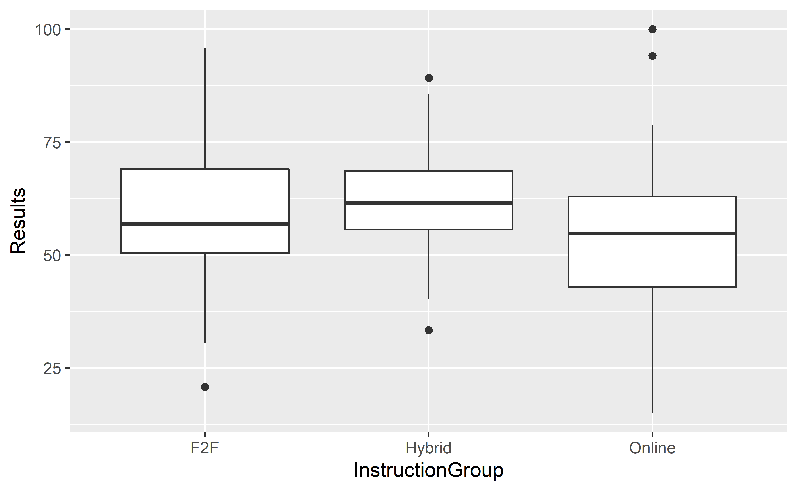
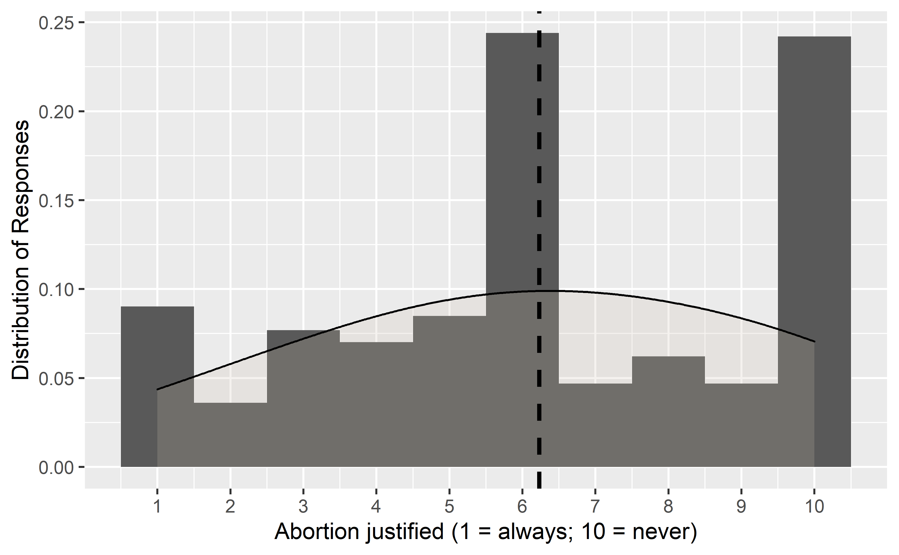
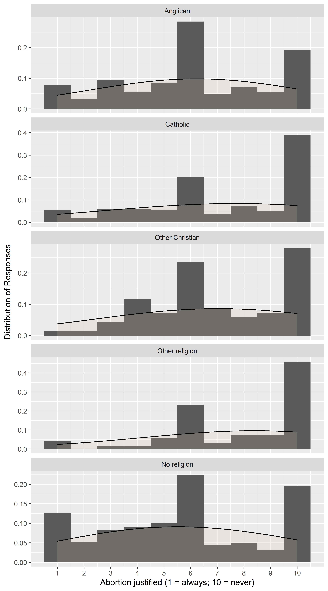
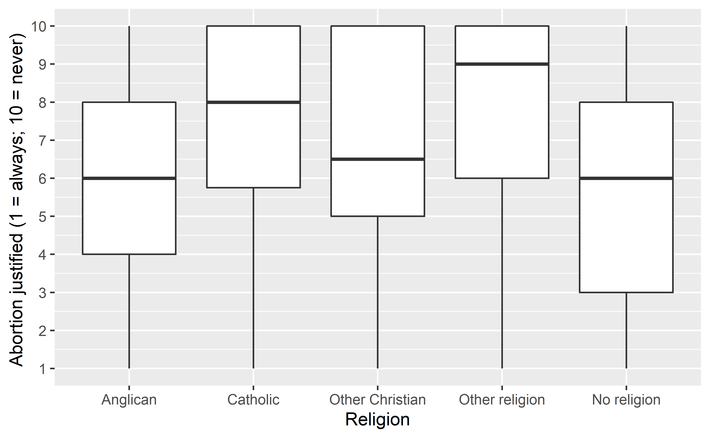
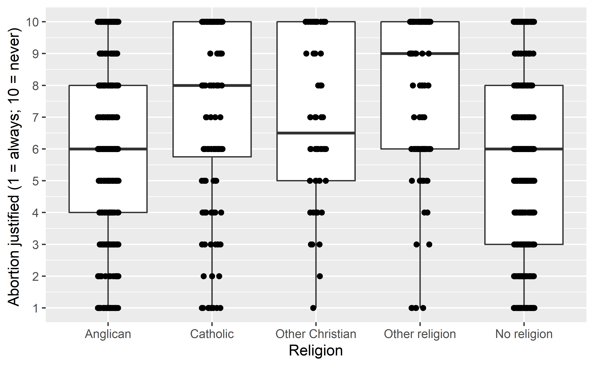

Week 8: Analysis of Variance (ANOVA)
Dr. Chris Moreh
15 July 2021
The slides from this presentation can be downloaded in PDF format from here: [link to be updated]
In Week 7 we compared the average population value across two different groups. An important aspect of the analysis was to look at the difference in sample means as an estimate for the difference in population means.
Sometimes we want to compare means across many groups. We might initially think to do pairwise comparisons using separate t-tests. For example, if there were three groups, we might be tempted to compare the first mean with the second, then with the third, and then finally compare the second and third means for a total of three comparisons.
However, this strategy can mislead. If we have many groups and do many comparisons, it is likely that we will eventually find a difference just by chance, even if there is no difference in the populations. Instead, we should apply a holistic test to check whether there is evidence that at least one pair of groups are in fact different. For this purpose, we will learn a new method called ANalysis Of VAriance (or ANOVA) and a new test statistic called the \(F\)-statistic.
ANOVA basics
ANOVA uses a single hypothesis test to check whether the means across many groups are equal:
- \(H_0:\) The mean outcome is the same across all groups. In statistical notation, \(\mu_1 = \mu_2 = \cdots = \mu_k\) where \(\mu_i\) represents the mean of the outcome for observations in category \(i.\)
- \(H_A:\) At least one mean is different.
Generally we must check three conditions on the data before performing ANOVA:
- the observations are independent within and between groups,
- the responses within each group are nearly normal, and
- the variability across the groups is about equal.
When these three conditions are met, we may perform an ANOVA to determine whether the data provide convincing evidence against the null hypothesis that all the \(\mu_i\) are equal.
A hypothetical example
Let’s imagine that we are university lecturers and it’s summer 2022. We have some data from the 2021/2022 academic year in which we ran three Intro to Statistics modules to 200 students who were randomly distributed into three different instruction groups: one group received only face-to-face teaching, a second group took part in hybrid (or blended) delivery, and the third group was instructed completely online. What we want to test is whether the method of instruction - in other words, belonging in one group - has affected the final results of the students. Using an ANOVA test, we can assess whether the variance in results between the groups is only due to chance or not.
Given that the example is from the future and that the aim is to demonstrate the logic behind the ANOVA test, I’ll simulate the data to have the best properties and I’ll throw all my prejudices in there as well regarding which method would deliver the best results (time will tell, I guess!).
We can simulate the data (roll down the code for details) have a quick look at some descriptive statistics and a by-group box-plot:
# Create the vector elements
set.seed(457)
InstructionGroup <- rep(c("Online", "Hybrid", "F2F"), length.out = 200)
Results <- rnorm(200, mean = c(55, 62, 58), sd = c(16, 10, 13 ))
# Constrain the grade scale to between 15-100
Results[Results > 100] <- 100
Results[Results < 15] <- 15
# Create the data-frame
toy <- data.frame(InstructionGroup, Results)
rm(list=c("InstructionGroup", "Results"))Descriptives
favstats(Results ~ InstructionGroup, data = toy)[c("InstructionGroup", "min", "max", "Q1", "Q3", "median", "mean","sd","n")] Boxplot
gf_boxplot(Results ~ InstructionGroup, data = toy)
We see from the descriptive statistics that there are noticeable differences between the average (i.e. mean) grades achieved by students in the three different instruction-groups. There are a few outliers in the data and the variance of grades within each group is slightly different, as we can see from the standard deviations. It would appear that students taking the online-only course did the worst on average, and their grades had the largest variance; we could say that it works really well for some students, but really badly for others). Classical face-to-face teaching resulted in better grades on average and lower variation between the grades, while the hybrid model produced the best results and more consistently (i.e. there was lower variation between the grades).
What we aim to find out is this: is the variability in the sample means of the three instruction groups so large that it seems unlikely to be from chance alone? In the context of ANOVA (as opposed to repeated t-tests) we will simultaneously consider many groups, and evaluate whether their sample means differ more than we would expect from natural variation. We call this variability the mean square between groups (MSG), and it has an associated degrees of freedom, \(df_{G} = k - 1\) when there are \(k\) groups. The \(MSG\) can be thought of as a scaled variance formula for means and represents a measure of variability between the groups.
If the null hypothesis is true, any variation in the sample means is due to chance and shouldn’t be too large. For the purposes of a hypothesis test, then, what we also need is a benchmark value for how much variability should be expected among the sample means if the null hypothesis is true. To this end, we compute a pooled variance estimate, often abbreviated as the mean square error (\(MSE)\), which has an associated degrees of freedom value \(df_E = n - k.\) It is helpful to think of \(MSE\) as a measure of the variability within the groups).
For a schematic visual representation of between-group and within-group variation, see the figures below:
Between-group variation
-1.png)
Graphical illustration of variation between and within groups. Based on: Navarro (2019)
Within-group variation
Graphical illustration of variation between and within groups. Based on: Navarro (2019)
When the null hypothesis is true (i.e. the mean outcome is the same across all groups), any differences among the sample means are only due to chance, and the \(MSG\) and \(MSE\) should be about equal. Thus, the fraction of \(MSG\) and \(MSE\) produces a statistic called F, which we can use to evaluate the hypothesis in what is called an F-test:
\[F = \frac{MSG}{MSE}\] When the null hypothesis is true and the conditions noted at the beginning are met, F follows an F-distribution with two associated parameters, \(df_1 = k-1\) and \(df_2 = n-k.\), which in the context of ANOVA are equivalent to the \(df_{G}\) and \(df_{E}\), respectively. The larger the observed variability in the sample means (MSG) relative to the within-group observations (MSE), the larger F will be and the stronger the evidence against the null hypothesis. In other words, the F statistic is a ratio of how the groups differ (MSG) as compared to how the observations within a group vary (MSE). Because larger values of F represent stronger evidence against the null hypothesis, we use the upper tail of the F distribution to compute a p-value.
You can find a detailed explanation of how to calculate all components of an ANOVA test mathematically (in this appendix from Diez, Cetinkaya-Rundel, and Barr (2019)). In practice, we will use software to fit ANOVA models, and one way of doing it in R is using the aov() function. We can run the test on our instruction-type example and print a summary of the results with the following code:
# creates an object storing the results
anova1 <- aov(Results ~ InstructionGroup, data = toy)
# prints a summary table of the results
summary(anova1) ## Df Sum Sq Mean Sq F value Pr(>F)
## InstructionGroup 2 2992 1496 7.36 0.00083 ***
## Residuals 197 40045 203
## ---
## Signif. codes: 0 '***' 0.001 '**' 0.01 '*' 0.05 '.' 0.1 ' ' 1In the results we have one row for the groups (InstructionGroup) and one for the error term (i.e. Residuals). It is not shown, but we can easily calculate the Total degrees of freedom (Df) Sums of Squares by adding up the two. We see that we have 2 degrees of freedom for our groups (\((k-1)=(3-1)=2\)) and 197 for the residuals (\((n-k)=(200-3)=197\)). The total degrees of freedom is therefore \(2+197=199\). The test statistic (F) is 7.36 (\(F=\frac{MSG}{MSE}=\frac{1496}{203}=7.37\), with some rounding error difference), with an associated p-value of 0.00083 (i.e. p<0.001). Based on this p-value we reject the null hypothesis as we have evidence that at least one mean group grade is different.
This is all that we can conclude from an ANOVA analysis. What would be interesting to find out, however, is also which means are different. For this purpose, we can do some further inference after the ANOVA test and compare each pair of group means. These comparisons can be accomplished using a two-sample t-test, but we use a modified significance level and a pooled estimate of the standard deviation across groups (instead of using the whole sample standard deviation). For example, for a confidence interval for the difference of two means, the standard error would be:
\[ \begin{aligned} \sqrt{MSE\left(\frac{1}{n_i}+\frac{1}{n_j}\right)}, \text{ where} \\ n_i \text{ is the sample size of one group, and} \\ n_j \text{ is the sample size of the second group}. \end{aligned} \]
In the case of comparing, say, the mean results between students in the “Hybrid” (\(n_i=67\)) group and those in the “F2F” group (\(n_j=66\)), this would result in:
\[ \sqrt{203\left(\frac{1}{67}+\frac{1}{66}\right)} = \sqrt{6.11} = 2.47 \]
So our estimate for the standard error is 2.47. We can then use a t-distribution for the inference, but with the degrees of freedom for the error term. The error (residual) degrees of freedom, as per the ANOVA results table, is 197. We can do all the pairwise tests all at once, but doing many tests at once can lead to a problem of multiple comparisons. A solution to this problem is to apply a method called Tukey’s Honest Significant Difference. To apply the method, we create a 95% confidence interval:
TukeyHSD(anova1, conf.level = 0.95)## Tukey multiple comparisons of means
## 95% family-wise confidence level
##
## Fit: aov(formula = Results ~ InstructionGroup, data = toy)
##
## $InstructionGroup
## diff lwr upr p adj
## Hybrid-F2F 4.18 -1.66 10.02 0.211
## Online-F2F -5.25 -11.09 0.59 0.088
## Online-Hybrid -9.43 -15.25 -3.61 0.001Based on the results from this test, we can say, for instance, that we are 95% confident that the true difference in mean grades between students in the Hybrid group and those in the F2F group is between -1.66 and 10.02 grades, and since this interval includes 0 (and so the p-value is also non-significant at p = 0.211), we cannot really tell with confidence which group achieves higher grades. However, the difference in mean grades between those in the Online group and those in the Hybrid group is significant (p = 0.001) and it is this group difference that contributed to the significant F-test in the ANOVA model.
It’s worth noting here that it is possible to reject the null hypothesis using ANOVA and then to not subsequently identify differences in the pairwise comparisons. However, this does not invalidate the ANOVA conclusion. It only means we have not been able to successfully identify which specific groups differ in their means. The ANOVA procedure examines the big picture: it considers all groups simultaneously to decipher whether there is evidence that some difference exists. Even if the test indicates that there is strong evidence of differences in group means, identifying with high confidence a specific difference as statistically significant is more difficult.
A real example
Let’s now turn to a published example with real data from Clements (2014). Part of that article uses data from the 2008 wave of the European Values Study (EVS) to assess “the relationship between religious factors and opposition to abortion” (Clements 2014, 371). The author describes their data as such:
The analysis also uses data from the fourth wave of the cross-national EVS. The sample size for the British component is 1561 cases. The relevant sample size for the EVS 2008 (restricted to those aged 18 and over) is 1485. Three items are used as the basis for analysis. First, two approve-disapprove items on abortion and, second, a self-placement scale – ranging from 1 to 10 – asking whether abortion is ever justified:
Please tell me for each of the following whether you think it can always be justified, never be justified, or something in between, using this card.
- Abortion
Table 2 provides a (…) breakdown for attitudes to abortion by religious affiliation based on the EVS 2008 data and using the same five categories for religious groups. Two questions ask about elective grounds for an abortion. Looking at the proportions who express disapproval in response to these questions, Catholics are more likely to oppose abortion compared to Anglicans and those who do not belong to a religion. However, higher levels of opposition are evident on behalf of members of minority faiths, while other Christians are marginally more opposed than Catholics to a woman having an abortion when she is not married. Again, there are varying proportions of ‘don’t know’ or no answer responses, particularly for the question concerning whether a couple cannot afford more children (highest at 28.7% for the other Christian category).
Finally, when comparing mean scores for the scale item asking if abortion is never or always justified (ranging from 1 to 10, with higher scores denoting support for abortions never being justified), members of minority religions are most likely to oppose abortion. Their mean score is 7.83 compared to 7.07 for Catholics, 6.77 for other Christians, 6.04 for Anglicans and 5.63 for the non-religious, which represent significant between-group differences accounting for within-group variation (ANOVA: F = 22.53***).
And this is their Table 2:
Source: Clements (2014, 376)
Exercise: Reproducing Clements (2014)
In this first example we will try to reproduce the findings reported by Clements (2014) in the highlighted last row of their ‘Table 2’. Data from the European Values Study is freely available from the GESIS data archive (EVS 2016). We note that while Clements had used a previous release of the data set (2.0.0, 2010-11-30), the version we are downloading is: 4.0.0 2016-04-15 Full data release (update) (current version). This may lead to somewhat different results if the variables and cases used in the analysis have changed between the versions.
A reduced data set containing the data we need for this session is available in this week’s folder. Let’s start by loading the required R packages and the data file, and let’s have a look at the data:
# Load the data from csv file
evs2008 <- read.csv("data/clementsEVSdata.csv")
# Set religion as factor and reorder categories
evs2008$religion <- as_factor(evs2008$religion)
evs2008$religion <- factor(evs2008$religion, levels = c("Anglican", "Catholic", "Other Christian", "Other religion", "No religion"))
# Print the dataset for browsing
evs2008Let’s check the distribution of the religion variable:
tally( religion ~ 0, data = evs2008, margins = TRUE)## 0
## religion 0
## Anglican 519
## Catholic 164
## Other Christian 68
## Other religion 124
## No religion 621
## Total 1496tally( religion ~ 0, data = evs2008, format = "percent")## 0
## religion 0
## Anglican 34.69
## Catholic 10.96
## Other Christian 4.55
## Other religion 8.29
## No religion 41.51We notice that in this case our sample sizes are less balanced than with the toy data from the hypothetical example, with only 4.6% of the sample in the ‘Other Christian’ category. ANOVA - as all other parametric tests covered in this course - is sensitive to sample sizes, but as long as the sample sizes in each group are greater than 30, we are covered.
Now let’s look at the distribution of answers on the scale measuring attitudes to abortion (let’s call this ‘anti-abortion attitudes’ given that the scale was reversed so that higher scores reflect answers closer to the statement that abortion can never be justified):
gf_bar(~abnotjust, data=evs2008) +
labs(x = "Abortion justified (1 = always; 10 = never) ", y = "Count") +
scale_x_continuous(breaks = seq(1, 10, 1))Histogram of attitudes to abortion
Reflecting on the material from previous weeks, how would you describe this distribution? Would you say that it is (a) unimodal, (b) bimodal or (c) multimodal? We can make some additions to the histogram to fit a normal line and to highlight where the sample mean sits:
evs2008 %>%
ggplot(aes(x= abnotjust)) +
geom_histogram(aes(y=..density..), binwidth=1) +
geom_density(adjust = 4, alpha = .2, fill = "antiquewhite3", colour="black") +
geom_vline(aes(xintercept=mean(abnotjust)), col="black", linetype="dashed", size=1) +
ylab("Distribution of Responses") +
xlab("Abortion justified (1 = always; 10 = never)")+
scale_x_continuous(breaks = seq(1, 10, 1)) 
Of course, the questions we must ask ourselves are the following:
whether the data within each group can be considered as normally distributed,
whether the variability across the groups is about equal.
evs2008 %>%
ggplot(aes(x= abnotjust)) +
geom_histogram(aes(y=..density..), binwidth=1) +
geom_density(adjust = 4, alpha = .2, fill = "antiquewhite3", colour="black") +
ylab("Distribution of Responses") +
xlab("Abortion justified (1 = always; 10 = never)")+
scale_x_continuous(breaks = seq(1, 10, 1)) + facet_wrap(~religion, ncol = 1, scales = "free_y")
It’s not quite perfect, and with such a short scale we are limited in terms of useful transformation, so we’ll go along.
The histograms also allow some sense of the variability of the data within the five religious groups, but we have some better tools for that. Let’s look at a table of descriptive statistics by group and a group-by-group box plot:
favstats(abnotjust~religion, data = evs2008)gf_boxplot(abnotjust ~ religion, data = evs2008) +
labs(y = "Abortion justified (1 = always; 10 = never) ", x = "Religion")+
scale_y_continuous(breaks = seq(1, 10, 1))
We could also superimpose a distribution of the data-points to better assess the variability of responses within the groups:
gf_boxplot(abnotjust ~ religion, data = evs2008) +
labs(y = "Abortion justified (1 = always; 10 = never) ", x = "Religion")+
scale_y_continuous(breaks = seq(1, 10, 1)) +
geom_jitter(position=position_jitter(width=.1, height=0))
Finally, we can perform the ANOVA analysis to assess whether any of the group averages are significantly different:
anova2 <- aov(abnotjust ~ religion, data = evs2008) # creates an object storing the results
summary(anova2) # prints a summary table of the results## Df Sum Sq Mean Sq F value Pr(>F)
## religion 4 744 186 23.4 <2e-16 ***
## Residuals 1491 11864 8
## ---
## Signif. codes: 0 '***' 0.001 '**' 0.01 '*' 0.05 '.' 0.1 ' ' 1Now try to answer the following questions: - What are the degrees of freedom for the groups? - What are the degrees of freedom for the error? - What are the total degrees of freedom? - What is the test statistic? - Can you calculate the test statistic by hand from the results shown in the output? - What is the p-value? (remember how to read the scientific notation?) - What is our generic conclusion at the \(\alpha=0.05\) level?
Finally, let’s check in more detail which group means are significant:
TukeyHSD(anova2, conf.level = 0.95)## Tukey multiple comparisons of means
## 95% family-wise confidence level
##
## Fit: aov(formula = abnotjust ~ religion, data = evs2008)
##
## $religion
## diff lwr upr p adj
## Catholic-Anglican 1.063 0.373 1.75357 0.000
## Other Christian-Anglican 0.851 -0.142 1.84468 0.133
## Other religion-Anglican 1.776 1.006 2.54575 0.000
## No religion-Anglican -0.467 -0.925 -0.00911 0.043
## Other Christian-Catholic -0.212 -1.323 0.89882 0.985
## Other religion-Catholic 0.712 -0.205 1.62903 0.211
## No religion-Catholic -1.531 -2.207 -0.85440 0.000
## Other religion-Other Christian 0.925 -0.238 2.08708 0.191
## No religion-Other Christian -1.318 -2.302 -0.33436 0.002
## No religion-Other religion -2.243 -3.001 -1.48523 0.000Because we have more groups this time, and therefore way more two-way combinations to test, the results from the THSD test are more complex. But the logic is the same as with the previous example.
Consider the hypothesis tests and identify which tests are significant, and what that means.
Finally, have a look at our results and compare them to those reported by Clements (2014). Read again their description of their data, sample and methods, and try to identify the possible reasons for any difference compared to our results.
That’s it for now! In the labs, we’ll do some more exercises and live coding.